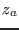
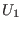
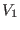

The vertical friction
INTERFACE:
subroutine friction(kappa,avmolu,tx,ty)
DESCRIPTION:
This subroutine updates the bottom roughness
The first term on the right hand side of (23) represents
the limit for hydraulically smooth surfaces, the second term the limit
for completely rough surfaces. Note that the third term, ,
is the contribution of suspended sediments to the
roughness length, see Smith and McLean (1977). It is updated during calls
to the sediment-routines.
The law-of-the-wall relations are used to compute the friction velocity
where  and  are the components of the mean velocity
at the center of the lowest cell.
We used the abbreviation
where  is the von Kármán constant and
the index `1' indicates values at the center of the first
grid box at the bottom (version 1). Another expression for
is the von Kármán constant and
the index `1' indicates values at the center of the first
grid box at the bottom (version 1). Another expression for  can be
derived using the mean value of the velocity in the lowest
grid box, and not its value in the middle of the box (version 2). Also
this method is supported in friction() and can be activated by
uncommenting one line in the code.
can be
derived using the mean value of the velocity in the lowest
grid box, and not its value in the middle of the box (version 2). Also
this method is supported in friction() and can be activated by
uncommenting one line in the code.
If no breaking surface waves are considered, the law of the wall
also holds at the surface. The surface roughness length may
be calculated according to the Charnock (1955) formula,
The model constant  is read in as charnock_val from
the meanflow namelist.
is read in as charnock_val from
the meanflow namelist.
USES:
use meanflow, only: h,z0b,h0b,MaxItz0b,z0s,za
use meanflow, only: u,v,rho,gravity
use meanflow, only: u_taub,u_taus,drag,taub
use meanflow, only: charnock,charnock_val,z0s_min
IMPLICIT NONE
INPUT PARAMETERS:
REALTYPE, intent(in) :: kappa,avmolu,tx,ty
REVISION HISTORY:
Original author(s): Hans Burchard & Karsten Bolding
Karsten Bolding
2012-12-28